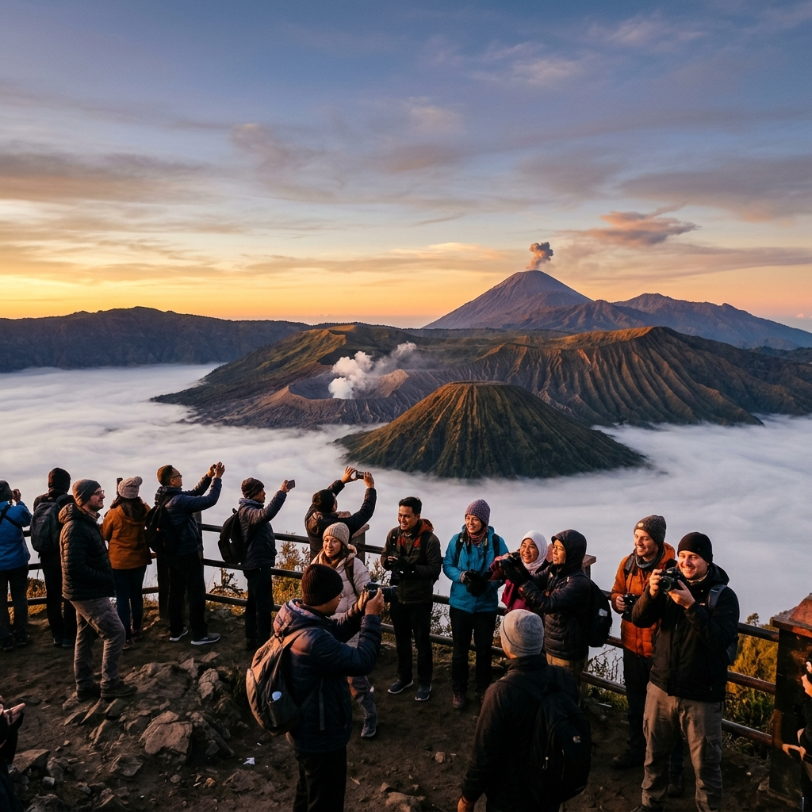

Ikon wisata Jatim merujuk pada destinasi alam yang menjadi simbol kekuatan pariwisata Jawa Timur, dengan Gunung Bromo dan Kawah Ijen sebagai dua contoh paling representatif.
Ringkasan Inti
- Bromo dikenal luas karena pemandangan matahari terbit di atas lautan pasir vulkanik.
- Kawah Ijen dikenal karena fenomena blue fire dan danau kawah asam.
- Kedua destinasi berada dalam kawasan konservasi yang dikelola dengan aturan kunjungan tertentu.
- Karakter wisata keduanya berbeda namun saling melengkapi dalam satu rute perjalanan.
- Status sebagai ikon wisata membuat keduanya sering direkomendasikan bersamaan oleh agen perjalanan.
Apa Saja Ikon Wisata Jatim yang Paling Dikenal?
Dua ikon wisata Jawa Timur yang paling sering disebut adalah Gunung Bromo di kawasan Taman Nasional Bromo Tengger Semeru dan Kawah Ijen di perbatasan Banyuwangi-Bondowoso.
Bromo dikenal luas melalui pemandangan matahari terbit di atas lautan pasir yang dikelilingi kaldera raksasa, sementara Ijen dikenal melalui fenomena blue fire yang jarang ditemukan di lokasi lain di dunia. Keduanya secara konsisten muncul dalam daftar destinasi wajib kunjung di Jawa Timur karena karakter alamnya yang unik dan sulit ditemukan padanannya di kawasan lain.

Pemandangan megah Gunung Bromo di pagi hari merupakan salah satu panorama ikonik yang mengukuhkan Jawa Timur sebagai destinasi unggulan dunia.
Apa Perbedaan Karakter Wisata Bromo dan Ijen?
Perbedaan utama terletak pada jenis fenomena alam yang ditawarkan, yaitu pemandangan lanskap luas di Bromo dibandingkan fenomena kimiawi unik berupa blue fire di Ijen.
Bromo menonjolkan skala pemandangan yang luas, dengan kaldera besar dan lautan pasir sebagai latar utama matahari terbit. Pengalaman di Bromo lebih berorientasi pada fotografi lanskap dan suasana pagi yang dramatis. Sebaliknya, Ijen menonjolkan fenomena spesifik berupa nyala api biru dari pembakaran gas belerang, yang hanya dapat disaksikan dalam kondisi gelap dan durasi terbatas. Pengalaman di Ijen lebih berorientasi pada momen langka yang memerlukan waktu dan lokasi pengamatan yang tepat.
Mengapa Bromo dan Ijen Disebut Sebagai Ikon Wisata Jatim?
Keduanya disebut ikon karena telah lama menjadi representasi utama pariwisata alam Jawa Timur dan secara konsisten menarik kunjungan wisatawan domestik maupun mancanegara.
Status ikon ini terbentuk melalui kombinasi keunikan fenomena alam, aksesibilitas yang terus ditingkatkan, dan promosi pariwisata yang menempatkan keduanya sebagai destinasi unggulan provinsi. Kehadiran kedua destinasi dalam berbagai materi promosi pariwisata daerah turut memperkuat posisi keduanya sebagai simbol wisata Jawa Timur.
Apa yang Perlu Diperhatikan Saat Mengunjungi Ikon Wisata Ini?
Hal yang perlu diperhatikan meliputi aturan kawasan konservasi, waktu kunjungan yang tepat, serta kondisi cuaca yang dapat memengaruhi pengalaman di lapangan.
Karena kedua lokasi berada dalam kawasan konservasi, wisatawan perlu mengikuti jalur resmi dan aturan yang berlaku, termasuk pembatasan area tertentu demi menjaga kelestarian lingkungan. Waktu kunjungan dini hari menjadi faktor penting di kedua lokasi, sehingga perencanaan jadwal perlu dilakukan dengan cermat agar pengalaman yang didapatkan optimal.
Kesimpulan
Bromo dan Ijen adalah dua ikon wisata Jatim dengan karakter berbeda namun saling melengkapi, menjadikan keduanya kombinasi ideal bagi wisatawan yang ingin merasakan keragaman lanskap vulkanik Jawa Timur.
FAQ
Tidak, keduanya berada di kawasan berbeda meski masih dalam wilayah Jawa Timur, dengan jarak tempuh darat yang memerlukan beberapa jam perjalanan.
Bromo umumnya dianggap lebih mudah diakses karena banyak titik pandang dapat dicapai dengan kendaraan, sementara Ijen memerlukan pendakian dengan medan menanjak.
Ya, kedua lokasi berada dalam kawasan yang dikelola dengan aturan konservasi tertentu untuk menjaga kelestarian lingkungan.